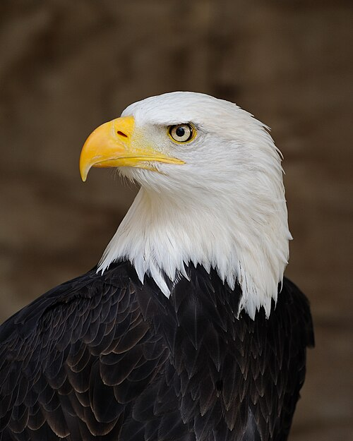
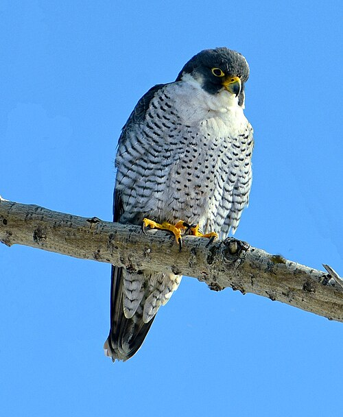

About Birds
Birds are warm-blooded animals that have
feathers, wings, and beaks. Most birds
can fly, and all birds lay eggs.
Learn more about
birds on Wikipedia
.
What Are Birds of Prey?
Birds of prey are birds that hunt and
eat other animals. They have sharp
claws called talons, strong beaks,
and excellent eyesight.
Some common birds of prey include
eagles, falcons, and owls.
Learn more about birds of prey
1. Bald Eagle

The bald eagle is a bird of prey
found in North America. It is known
for its white head, brown body,
and yellow beak. It is also the
national bird of the United States.
Three Interesting Facts
- It mainly eats fish.
- It builds very large nests.
- It lives near lakes and rivers.
Bald Eagle - Wikipedia
2. Peregrine Falcon

The peregrine falcon is one of the
fastest animals in the world.
It can reach speeds over 200 miles
per hour when diving to catch prey.
It is found on nearly every continent.
Three Interesting Facts
- It hunts other birds in flight.
- It can live in cities and on cliffs.
- It has excellent eyesight.
Peregrine Falcon - Wikipedia
3. Great Horned Owl

The great horned owl is a large owl
found throughout the Americas.
It gets its name from the feather
tufts on its head that look like horns.
It is a powerful nighttime hunter.
Three Interesting Facts
- It mainly hunts at night.
- It eats rodents, rabbits, and birds.
- It can fly almost silently.
Great Horned Owl - Wikipedia
Conclusion
Birds of prey are important to nature
because they help control populations
of other animals. Each species has
unique abilities that help it survive.